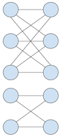
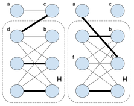

We're now waiting for the contest to start. Once the contest starts,
the problems will automatically load, and Problem A will display here.
You don't have to solve that problem first; you will be able to select
another problem from the list to the left. Once you've solved one
problem, don't forget to work on the others!
Overview | Problem A | Problem B | Problem C | Problem D
Round 2 turned up the heat with some tougher problems. Even the easiest one,
Rather Perplexing Showdown, can be tough depending on how you approach
it. Red Tape Committee requires some standard dynamic programming
techniques and a perhaps counterintuitive insight about probability.
The Gardener of Seville is an unusual construction problem that is not
trivial to implement even when you know what to do, and Freeform Factory
is a tricky graph/matching problem.
The first hour of the contest saw many solves of A and B, and some correct answers to the
tougher larges trickled in. SnapDragon was the first to crack C-large, at 44:09. austrin
snagged the first D-large solution at 55:45, and had the only one until reigning champion Gennady.Korotkevich solved it at 1:11:07, jumping to the top of the scoreboard. For a while,
many contestants were one problem away from 100, but EgorKulikov reached it first with
a penalty time of 1:55:43. EgorKulikov had two wrong tries on one problem, so a tense 8
minutes passed in which another contestant could have jumped into first place, but this did
not happen and victory was secured. Ahyangyi, eatmore, and betaveros followed up with our
other three perfect scores.
Although the results are provisional until confirmation emails are sent, the top 500 required
at least 46 points (often all of A and B plus one other Small) plus some speed, and the top
1000 required 29 points (at least one Large, usually A) plus some speed.
Congratulations to the top 1000... wear your 2016 Code Jam T-shirt with pride!
The top 500 will join us in Round 3 to compete for one of 25 tickets to the
World Finals in New York in August! Even if you didn't advance or win a T-shirt
in this round, remember that DCJ Round 1 offers another chance at a T-shirt and
a trip to New York; it will take place on
May 29.
Cast
Problem A (Rather Perplexing Showdown): Written by Ian Tullis. Prepared
by Taman (Muhammed) Islam and Ian Tullis.
Problem B (Red Tape Committee): Written by Ian Tullis. Prepared by Karol
Pokorski.
Problem C (The Gardener of Seville): Written and prepared by Petr
Mitrichev and Ian Tullis.
Problem D (Freeform Factory): Written by Petr Mitrichev. Prepared by
Pablo Heiber and Petr Mitrichev.
Solutions and other problem preparation and review by David Arthur, Shane Carr,
John Dethridge, Minh Doan, Taman (Muhammed) Islam, Chieu Nguyen, Nathan
Pinsker, Karol Pokorski, Yerzhan Utkelbayev, Jonathan Wills,
and Josef Ziegler.
Analysis authors:
- Rather Perplexing Showdown: Ian Tullis
- Red Tape Committee: David Arthur and Ian Tullis
- The Gardener of Seville: Timothy Loh
- Freeform Factory: Pablo Heiber, Petr Mitrichev and Amit Weinstein
Rather Perplexing Showdown: Analysis
There are multiple ways to attack this problem. We will present two methods for
building the correct tournament tree, and a method for finding the arrangement
of that tree that produces the alphabetically earliest lineup. It is possible
to combine the tree building and tree optimization methods into a single
algorithm, but we present the analysis this way for ease of explanation.
Building the tree: starting from the beginning
Let's start from the beginning of the tournament and create each new round. At
any point, you have some number of Rs, Ps, and
Ss remaining, and you can only create RP,
RS, and PS matches, because anything else would
result in a tie. Call the number of RP matches you will create
x — that is, you will make x of the Rs match
up with x of the Ps. Then all other Rs
must face Ss, so you will create R-x RS
matches. There will be P-x leftover Ps and
S-(R-x) leftover Ss, and these numbers must be
equal to avoid creating tied matches, so P-x =
S-R+x and x = (R+P-S)/2. If
this x causes an impossible situation (e.g, there must be more
RP matches than there are Rs or Ps),
then the answer is IMPOSSIBLE. Otherwise, match the players
accordingly, note the winners (all RPs become Ps, all
RSs become Rs, and all PSs become
Ss), and then you have a smaller instance of the same problem.
This strategy tells you whether the tournament will end, and how to make all
your matchups; with that information and some careful bookkeeping along the
way, you can generate the entire tree.
Building the tree: starting from the end
Let's start from the end of a tournament instead. Suppose that the winning
player is a P. What do we know about the match that produced
that winner? One of the participants must have been that P, and
the other must have been the opponent that the P defeated, namely,
an R. That R must have defeated an S,
and so on. That is, for any node in the tournament tree, including the bottom
(winning) node, we can easily regenerate the entire part of the tree that led
to it!
This also implies that for a given N, there is only one possible
(R, P, S) triplet that will produce a
successful tournament ending in R, and likewise for P
and S. Almost all triplets are doomed to fail! There are only
three valid ones for any N, and each of them must produce a different
winner.
So, we can try all three possible winners (R, P, and
S) for every value of N from 1 to 12, and store the
resulting tournament trees and their numbers of Rs,
Ps, and Ss. Then, for each test case, either the
given N, R, P, and S values match one of the stored
trees, or we know the case is IMPOSSIBLE.
Finding the alphabetically earliest lineup
Having the tournament tree is not enough, because a tree can generate many
possible lineups. For any internal (non-leaf) node in the tree, you can swap
the two branches; this does not change the tree, but it does change the initial
lineup! For instance, the lineups PSRS, PSSR,
RSPS, RSSP, SPRS, SPSR,
SRPS, and SRSP all represent the same tree. There are
2N-1 internal nodes in the tree, and we can't try all 2 to
the (2N-1) ways of flipping or not flipping each of them.
Fortunately, we don't have to.
Consider any pair of players who face off in the first round; let's say
they're using moves X and Y, where X is alphabetically earlier than Y. These
two players will contribute to two consecutive characters in the lineup;
either XY or YX, depending on whether we flip their node. Flipping other nodes
in the tree may move this pair of characters around in the final lineup, but it
cannot reverse or separate them. So we have nothing to lose by choosing XY;
this decision is totally independent of whatever we do with other nodes later.
More generally, for any node, we should put the "alphabetically earlier" branch
before the "alphabetically later" branch. Moreover, we should optimize
shallower nodes in the tree before optimizing deeper nodes, so that we can be
sure that we're only making decisions about branches that are already
themselves alphabetically optimized.
So we can start with any lineup corresponding to our tree (ideally,
whatever came out of our algorithm earlier), and first examine the lineup in
2N-1 chunks of length 2 and swap the letters in each chunk
whenever that would make the chunk alphabetically earlier. Then we can examine
the lineup in 2N-2 chunks of length 4, and swap the subchunks
of length 2 in each chunk whever that would make the chunk alphabetically
earlier. And so on, until we've examined and possibly swapped the 2 chunks of
length 2N-1; that final lineup will be our alphabetically
earliest answer.
Red Tape Committee: Analysis
This problem poses two challenges: figuring out which sets of members to
consider as possible committees, and calculating the tie probability for each
committee. In the Small dataset, brute force will suffice for both of these
subproblems. However, in the Large dataset, we will need more efficient methods
for both of them.
Who should we choose?
One might think that in order to create ties, we should choose from among the
most "moderate" department members — that is, the ones with Yes
probabilities closest to 0.5. In fact, the opposite is true! The best way to
create a tie is to choose department members from one or both extremes.
That is, we should choose the M (possibly zero) of the department
members with the lowest Yes probabilities, and the K - M of the
department members with the highest Yes probabilities. This makes sense
intuitively; to take an extreme case, a committee of two members with Yes
probabilities of 0.00 and 1.00 will always tie, whereas a committee of two
members with Yes probabilities of 0.50 and 0.50 will tie only half the time.
Experimentation bears this idea out. But how can we prove it?
Without loss of generality, let's sort the members in increasing order of Yes
probability. Suppose that we have chosen a committee of these members that
maximizes the tie probability. If there are multiple such committees, suppose
that we have chosen the one that also minimizes the sum of the members' indexes
in that sorted list.
We'll show that this set consists of the M (possibly zero) leftmost
members and the K - M rightmost members, as described above.
Suppose that there exist the following: a member X, who is in our set, and
members Y and Z, who are not in our set, and that they are in the left to right
order Y, X, Z. Fix all the other members and consider the tie probability as a
function of member X's Yes probability. This is a linear function. If it has
slope 0, then we can get an equally good set with a smaller sum of member
indices by replacing X with Y. If it has slope > 0, we can get a better set by
replacing X with Z. If it has slope < 0, we can get a better set by replacing X
with Y. So X must not exist!
Therefore, we can try all values of M and consider only those
committees. This linear search adds a multiplier of O(K) to the running
time of the calculation of tie probabilities. The one-time sort also adds a
single O(N log N) term.
How likely is a tie?
For a large committee, we cannot explicitly consider all 2N
possible voting outcomes. Many of these outcomes are very similar, and we would
do a lot of redundant work. This is an ideal situation for dynamic programming.
Let's build a table in which the columns represent the committee members, the
rows represent the total number of Yes votes so far, and the numbers in the
cells measure the probability of being in the situation represented by that
row and column. We start with a 1.00 in the upper left cell, which represents
the situation before anyone has voted; there is a 100% chance that there will
be no "Yes" votes at this stage. Let's consider a committee with Yes
probabilities of 0.10, 0.20, 0.50, and 1.00. We will label the columns in that
order (although the order does not matter).
- init 0.10 0.20 0.50 1.00
0 1.00 ---- ---- ---- ----
1 ---- ---- ---- ---- ----
2 ---- ---- ---- ---- ----
3 ---- ---- ---- ---- ----
4 ---- ---- ---- ---- ----
When the first member votes, either the vote will be "Yes" with 10% probability
(and we will have one Yes vote), or "No" with 90% probability (and we will have
zero Yes votes). So the 1.00 value gets split up among two cells in the next
column: the "0 Yes votes after 1 member has voted" and "1 Yes vote after 1
member has voted" cells.
- init 0.10 0.20 0.50 1.00
0 1.00 0.90 ---- ---- ----
1 ---- 0.10 ---- ---- ----
2 ---- ---- ---- ---- ----
3 ---- ---- ---- ---- ----
4 ---- ---- ---- ---- ----
Let's look at the "0 Yes votes after 1 member has voted" cell, which represents
90% of all possible situations after the first member has voted. That
probability will feed into two of the cells in the next column: the one just to
the right, and the one just below that. Since the second member has an 80%
probability of voting No, 80% of that 90% possibility space branches off to the
"0 Yes votes after 2 members have voted" cell. The other 20% of that 90%
branches off to the "1 Yes vote after 2 members have voted" cell.
- init 0.10 0.20 0.50 1.00
0 1.00 0.90 0.72 ---- ----
1 ---- 0.10 0.18 ---- ----
2 ---- ---- ---- ---- ----
3 ---- ---- ---- ---- ----
4 ---- ---- ---- ---- ----
And now for the "1 Yes vote after 1 member has voted" cell, which represents
10% of all possible situations after the first member has voted. Again, that
probability will feed into the right and down-and-right neighboring cells in the
next column. Note that we add 0.08 to the existing value of 0.18 in the "1 Yes
vote after 2 members have voted" cell; there are multiple ways of getting to
that cell. The power of dynamic programming is that it merges separate
possibilities like this and lets us consider them together going forward; this
prevents an exponential increase in the number of possibilities.
- init 0.10 0.20 0.50 1.00
0 1.00 0.90 0.72 ---- ----
1 ---- 0.10 0.26 ---- ----
2 ---- ---- 0.02 ---- ----
3 ---- ---- ---- ---- ----
4 ---- ---- ---- ---- ----
Continuing in this way, we can fill in the whole table. Note that every column
sums to 1, as expected.
- init 0.10 0.20 0.50 1.00
0 1.00 0.90 0.72 0.36 0.00
1 ---- 0.10 0.26 0.49 0.36
2 ---- ---- 0.02 0.14 0.49
3 ---- ---- ---- 0.01 0.14
4 ---- ---- ---- ---- 0.01
The tie probability is the value in the "2 Yes votes after 4 members have
voted" cell: 0.49. We could have optimized this further by not considering any
rows below the number of Yes votes needed for a tie. In practice, in problems
like this, one should store the logarithms of probabilities instead of the
actual values, which can become small enough for floating-point precision
errors to matter.
The number of calculations in this method is proportional to the dimensions of
the table, each of which is proportional to K, so the running time of
this part is O(K2). Combining that with the O(K)
method of selecting committees, the overall running time of our approach is
O(K3) + O(N log N). Since K cannot
exceed N, and N cannot exceed 200 for the Large, this is fast
enough, albeit not optimal. (For example, we could do a ternary search on the
value of M mentioned above, instead of a linear search.)
The Gardener of Seville: Analysis
Small dataset
For the Small dataset, there are at most 16 cells in the courtyard that we must
assign hedge directions to, a total of at most 65536 different hedge mazes.
Note that because every cell must have a diagonal hedge, any maze creates a
bijection between courtiers; it is impossible for the paths used by two
different pairs of lovers to intersect, so we don't need to worry about that.
We can use brute force to generate and check all possible hedge mazes, as long as
we can efficiently work out which outer cells are paired up through the hedge
maze. This can be done in various ways, including:
- Consider hedges to be mirrors, and imagine shining a beam of light into
the maze from an outer cell, perpendicular to the edge it's on. At each cell
the light will reflect off the cell's mirror at a 90 degree angle and continue
to the next cell in its new direction. It repeatedly bounces off mirrors until
it exits the maze at the cell it's paired with.
- Imagine drawing both hedges in each cell, splitting each cell into four
quadrants. We can represent the maze as a graph in which the nodes are these
quadrants, and there are edges between adjacent quadrants that are not blocked
by part of a hedge. We can find which courtiers are paired by starting at the
node corresponding to that courtier's starting edge of the maze, and traversing
the graph until we reach another edge. Equivalently, we can find the connected
components of the graph.
Large dataset
The Large dataset has test cases with up to 100 cells, which is too large for our
brute force approach. A more fruitful approach is to take the given pairs
and install hedges so that those pairs are connected. The easiest cases would be
connecting two cells which are adjacent (either along an edge or around a
corner). For example, to connect the two outer cells adjacent to the upper left
corner, a single / hedge is sufficient. Does it ever make sense to
connect them any other way? The illustration for test case 3 from the sample input
connects the two outer cells adjacent to the upper right corner via a longer
winding path, but it would also work to make this connection direct and leave the
center of the garden unreachable. The direct
connection covers just two triangular quadrants (as defined in the Small dataset
section) in the corner, and it is easy to see that any other possible path
between the two cells also covers these two quadrants. Thus there is no reason
not to use this direct path if we need to connect the cells at a corner.
How about outer cells next to each other along an edge? These can be easily
connected using two hedges, which covers four triangular quadrants. All possible
connections will necessarily cover the two quadrants at the edge of the board,
but we can construct paths which do not cover the other two quadrants. However,
any path that does not use those two quadrants is guaranteed to block them off
and make them inaccessible from other edges. Thus, any path between the two cells
will either cover the four quadrants forming the simplest path, or render some of
them unusable; there is no reason to use anything more complex than the simplest path.
If every pair to connect has a similarly optimal path which we can easily
determine, then we can solve the problem by installing hedges so each pair is
connected via its respective optimal path, and if any of the paths intersect
then there is no solution. Consider, however, a pair between outer cells on the left
and right sides of the garden. Depending on the other connections we need to
make, we may be able to freely choose between (for example) having the path go
through the top half of the garden and the bottom half of the garden. As such,
there isn't a clear single optimal path for connecting this pair. However, we
can consider uppermost and lowermost paths, which leave the most space for
paths below and above them, respectively. For an uppermost path, for example, we want to take
the least space possible to connect the pair, and all the pairs above it.
turns out there is a optimal way to connect such pairs.
For the rest of the analysis, we will assume that there is a solution to the
problem. If there is a solution, then our strategy will provide a way to find
it. If there is no solution, our strategy may not be correct but we can easily
detect that it fails by checking the hedge maze as we did in the Small solution.
Define a 'group of pairs' as a non-zero number of pairs where all the outer cells used
form a fully contiguous section around the perimeter (but not the full perimeter).
For a pair connecting the left and right sides of the garden, we can consider
the group of pairs above the path connecting this pair, and the group of pairs
above and including this pair. Every group of pairs has an optimal set of
triangular quadrants to join all pairs in that section. Similar to before,
optimality here means that we can install hedges to connect each pair in the
group without covering quadrants outside the optimal set (this property is
sufficiency), and if all pairs in the group are connected, no paths from other
pairs can ever cover quadrants inside the set (this property is necessity).
We already know the optimal sets for the groups with a single pair of adjacent
outer cells. If we have two groups of pairs, which together would form a larger
group of pairs, the optimal set will be the union of the optimal sets for the
two smaller groups. We can prove that this meets both the sufficiency and
necessity properties (as stated before, this requires the assumption that there
is a solution).
Consider again the case of a pair connecting the left and right sides of the
garden. If we have the optimal set for the group of pairs above this pair, then
we can try and extend this to the optimal set for the group of pairs above and
including this pair. It makes sense to try and make the path for this pair as
high up as possible, staying as close as possible to the paths above it. It can
be proven that including this path makes a new optimal set. In general, this
works for any non-adjacent pair. If we have the optimal set of quadrants for
the group of pairs on one side of a pair, we can extend it by adding a path
that stays as close to those quadrants as possible. This means we can
inductively find optimal sets of quadrants until we cover all the pairs (note
that we did not define all pairs as a valid group of pairs, as the definition
of optimality doesn't work for that case).
These ideas give us the following algorithm:
- Start with no hedges in the garden
- Iterate over pairs, in increasing order of distance (along the perimeter)
between the two cells. Ties can be broken arbitrarily.
- Let the two outer cells be A and B, such that A→B clockwise around
the edge is shorter than counterclockwise. Due to the chosen iteration order,
we've already built paths for all points on the left side of the A→B path
we're going to construct.
- Walk through maze starting at A (the mirror analogy is useful here). We want
to stay to the left as much as possible, so if we get to a cell without a hedge
installed we pick one so that we turn left. Once we exit the maze, check if we
actually made it to B. (If there is no solution we might end up somewhere else.)
- Fill in remaining cells arbitrarily
A sample implementation of this in Python is provided below. We encode
directions with integers, which allows us to rotate direction and calculation
movement easily using bitwise operations and array lookups.
def position(v, R, C):
# Map from outer cell number to a direction facing into the maze
# and the position of the outer cell
# 0->downwards, 1->leftwards, 2->upwards, 3->rightwards
if v <= C: return 0, v-1, -1
v -= C
if v <= R: return 1, C, v-1
v -= R
if v <= C: return 2, C-v, R
v -= C
return 3, -1, R-v
def move(x, y, direction):
return x + [0,-1,0,1][direction], y + [1,0,-1,0][direction]
def solve(R, C, permutation):
board = [[None] * C for _ in range(R)]
size = 2*(R+C)
permutation = zip(permutation[::2], permutation[1::2])
permutation.sort(key=lambda(a,b): min((b-a)%size, (a-b)%size))
for start, end in permutation:
if (start-end) % size > R+C:
start, end = end, start
direction, x, y = position(start, R, C)
x, y = move(x, y, direction)
while 0<=x<C and 0<=y<R:
if board[y][x] is None:
board[y][x] = "/\\"[direction & 1]
direction ^= {"/": 1, "\\": 3}[board[y][x]]
x, y = move(x, y, direction)
if (x, y) != position(end, R, C)[1:]:
return "IMPOSSIBLE"
return "\n".join("".join(c or "/" for c in row) for row in board)
if __name__ == "__main__":
for t in range(1, input() + 1):
R, C = map(int, raw_input().split())
permutation = map(int, raw_input().split())
print "Case #%d:" % t
print solve(R, C, permutation)
Freeform Factory: Analysis
As the first step in solving this problem, we will move it from worker/factory terms to graph
terms: we are given a bipartite graph with N vertices in each part, and need to add
the smallest amount of edges to this graph to guarantee that every
maximal matching
(one where it is impossible to add more edges) is a perfect matching (one which covers all vertices).
In order to determine that, we need to understand which bipartite graphs have the property that
every maximal matching is perfect. One can tackle this part by drawing a few
graphs on paper and trying to add edges one by one to find a maximal matching.
After a few experiments, we can form a hypothesis: every maximal matching is perfect if and
only if each connected component of the bipartite graph is a
complete bipartite graph
with same number of
vertices in each part. The "if" part is somewhat clear, but the "only if" part
looks surprising at first and definitely needs a formal proof, which you can find at the end of
this editorial. Here's an example of such graph:

Now we can return to solving our problem. As the first step, we need to find the number
of vertices in each half for each connected components of the graph. Let us put those
numbers into a list of pairs, one pair per connected component:
(p1, q1),
(p2, q2), ...
The above hypothesis tells us that we need to split this list into groups such
that in each group the sum r of all ps equals the sum of all qs, those groups
corresponding to the connected components of the graph after adding more edges.
The number of added edges is the total number of edges in the resulting graph minus
the number edges we have initially, and the number of edges in the resulting graph
is equal to the sum of squares of rs. Thus we need to minimize the sum of squares of
rs.
Since N is quite small — up to 25 — there are quite a few
approaches that work, almost all revolving around dynamic programming/memoization.
Here is one possibility:
for each subset Y of the (multi-)set X of pairs we have,
and each number t between 0 and N, we will check if it is possible to group
all components in Y into groups in such a way that there are several balanced
groups with total size t, and possibly one unbalanced group with all remaining
components. In case it is possible, we will find the smallest possible sum of squares
of sizes of the balanced groups, denoted as dpY,t.
Looking at dpX,N will give us the answer to the problem.
At first sight,
it seems that we are considering 250 subsets here as we might have up to 50 components
in the original graph (if we have no edges at all), but we can note that equal components are
interchangeable, so a graph with no edges simply has 25 components of one type and 25 components
of the other type, and thus has the total of 26*26=676 different subsets of components.
The maximum amount of different subsets of components for N=25 is 43008, formed by the following
initial components:
6×(0,1), 5×(1,0), 3×(1,1), 1×(1,2), 1×(1,3), 1×(1,4),
1×(2,1), 1×(2,2), 1×(3,1), 1×(3,2), 1×(4,1).
The most straightforward way to compute the dpY,t values
is to use the so-called forward dynamic programming: after finding
dpY,t, we will iterate over all ways to add a new element
to the unbalanced group in Y, updating t in case the unbalanced group
becomes balanced.
All that is left is to prove the hypothesis. We will prove by contradiction: assume that
the hypothesis is false — in other words, that there exists a bipartite graph
where every maximal matching is perfect, but one of its connected components is not a complete
bipartite graph with same number of vertices in each part.
Consider such counterexample G with the smallest number of vertices (note that
looking at the smallest counterexample is essentially the same as proving by induction). First of all,
G is connected — otherwise any of its connected components would form a smaller
counterexample. It is also clear that both its parts have the same number of vertices, as otherwise
no perfect matching exists at all, while at least one maximal matching always exists, so we would have
a contradiction. Since G is a counterexample, it is missing at least one edge. Let us
say that the missing edge connects vertices a and b.
Consider any edge (a, c) that exists from a
(there is one since G is connected). Consider the graph G' obtained by
removing a, c and all their incident edges from G. Every maximal matching
in this smaller graph is perfect, since it can be extended to a maximal matching in
G by adding (a, c). And since G' has fewer vertices
than G, it is not a counterexample to our hypothesis, and thus each connected component
of G' is a complete bipartite graph with same number of vertices in each part.
Let us look at the connected component H of G' containing b. There are three
cases, each leading to a contradiction:
- There is at least one edge (d, c) in G from H to c.
Since all connected components of G' are complete, we can easily build a matching
M'
in G' that covers all vertices except d and b. By adding the edge
(d, c) to this matching we get a matching M in G.
Matching M is maximal: its only two uncovered vertices are a and b,
and there is no edge between them. M is not perfect, and thus we get a contradiction
with the definition of G.
- There is no edge from H to c, but there exists an edge (a, e)
from a to H. Consider any vertex f from H in a different part from
e. Since H and all other connected components of G' are complete,
we can now build a matching M' in G' that covers all vertices except
e and f. By adding the edge (a, e) to this matching we get a matching
M in G. Matching M is maximal: its only two uncovered vertices are
f and c, and there is no edge between them since there is no edge between the entire
H and c. M is not perfect, and thus we get a contradiction
with the definition of G.
- Finally, if H is not connected to a and c, then G is
disconnected, which is also a contradiction.
The first two contradiction cases are depicted below:

There is also a more beautiful argument leading to a contradiction which does not even require
the counterexample G to be the smallest,
but it can be a bit harder to come up with. Since G is connected, there is a simple path
P between a and b. Since the graph is bipartite, P has odd length and
covers some subset
of the vertices, the same number from each part. We construct a maximal (therefore perfect) matching
as follows: we take every odd edge along the path P, and then complete it with arbitrary
edges. Now, we can change our choice of edges and take the even edges of P instead of the odd
ones. As a result, our matching has one less edge, and vertices a and b are the only
non-covered ones. Since a and b are not connected by an edge, we are left with a maximal matching
which is not perfect, in other words a contradiction.
 Submissions
Submissions